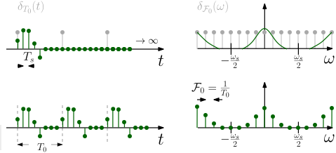

Curculionoidea parasitized by Ophiocordyceps curculionum (Iquitos, Peru)
22051
Signals and Systems in Discrete Time
Lecture 4
Reframing: Frequency analysis and some first filtering
Bastian Epp
What happened last week
- Interpretation of the Fourier transform as orthonormal basis
- Encoding of the phase information in the Fourier coefficients
- The DFT as a special case of the DTFT
intermezzo: Linear algebra
The scalar (or "inner" or "dot") product for vectors:
\[ \vec{A} \cdot \vec{B} = a_1b_1 + \dots + a_nb_n = |\vec{A}||\vec{B}|\cos (\Theta) \]
And for functions:
\[ \int_{-\infty}^\infty e^{j\omega_1 t}e^{j \omega_2 t} dt = 0 \ \ \omega_1 \neq \omega_2 \]
Vector projections help in DSP
Fourier transforms - how do you get the phase?
Let's have a look into the mechanics
\[ \mathcal{F}\bigl( x(t) \bigr) = X(\omega ) = \int_{-\infty}^\infty x(t) e^{-j \omega t} dt = \int_{-\infty}^\infty x(t) \bigl( \textcolor{red}{\cos (\omega t)} + \textcolor{blue}{j \sin (\omega t)} \bigr) dt \]
Important properties
Sampling in frequency makes time periodic
From the DTFT to the DFT
- Increasing the periodicity $T_0$ will lead to infinitely dense components in the spectrum
- In the limit a continuous spectrum with spectral density $X(\Omega)$ is built up \[ x(n) = \frac{1}{2 \pi} \int_{2 \pi} X(\Omega) e^{j \Omega n} d \Omega \]
- The DFT is a sampled version of the DTFT
(Frequency) Transfer function
Length of IR and width of TF are closely related
Some properties of the transfer function
- Transfer function consists of magnitude AND phase
- Low-pass characteristics in magnitude
- Linear phase variation
- Transfer function width changes with length of impulse response (inversely)
Longer (shorter) impulse response leads to narrower (wieder) transfer function
What happens in session 4?
...let's dig deeper...
What is going to happen today
- Windowing
- Truncation in time
- Implicit assumtions behind DFT
- Wiggle wiggle in time
- Windowing
- Linear and circular convolution
- Filtering in practice
- Block processing
Small-group discussions!
Truncation of signals in the time domain
Infinitely long is too long
- Truncating of signal equal to multiplication with a square wave
- Cutting leads to oscillation in spectrum (Gibb’s phenomenon)
Linear and circular convolution
Different length means different frequency resolution
Equivalence if “compatible for multiplication”: Convolution in time is multiplication in frequency domain (e.g. impulse response) \[ y(n) = x_1(n) \ast x_2(n) \Rightarrow Y(\omega) = X_1(\omega) \cdot X_2(\omega) \] But only if (!) frequency bins match up!
Filteringin the frequency domain
Same length means same spectral resolution
Matching and non-matching frequency bins
- Point-wise multiplication of frequency-bins
- Convolved signal has same length as initial signals
- What can this be useful for? And why?
Processing of signal chunks
This is one way of doing it
With real signals!
Quickies!
...let's see where we stand...
Quickie Nr 3
Take a few minutes to answer the following questions:
- What is the difference between the DTFT and the DFT?
- What determines the spectral resolution of the DFT?
- What is “windowing” of a signal?
- Under which condition are circular and linear convolution of x(n) and h(n) identical?
- Why are spectra of real-valued signals symmetric?
The DTFT operates on discrete, infinitely long time signals. The DFT on finite length signals (assuming to be on period of a periodic signal).
The duration of the signal in seconds.
Multiplication of a signal with a window function, for example to make it finite length.
They are identical if the spectra of $x(n)$ and $h(n)$ both have length $[length(x(n)) + length(h(n)) -1]$ (length as the resulting signal after linear convolution in the time domain).
In order to be real-valued, the imaginary parts of the Fourier coefficients need to cancel
each other:
$\cos(\omega t) = \frac{1}{2} \bigl(e^{j \omega t} + e^{-j \omega t} \bigr)$
Microgecko (Tropiocolotes) latifi (?)